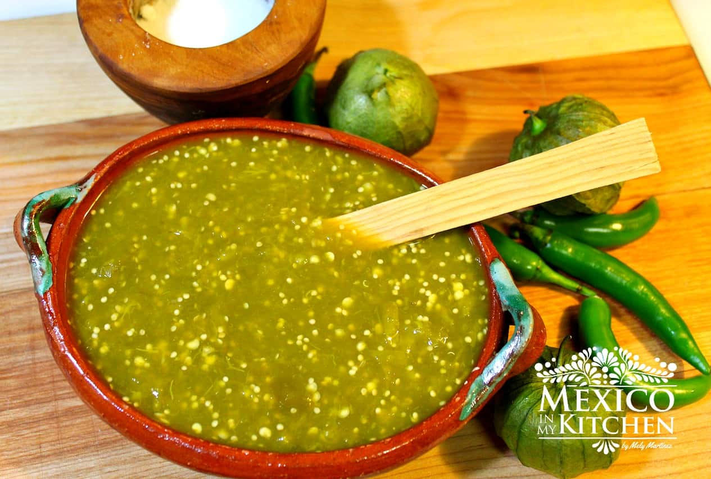

Salsa Verde (green sauce)

Mexican style green sauce
Impress your friends with this delicious mexican style green sauce!
Ingredients
- 1 avocado
- 1 cup packed parsley and cilantro leaves (combined)
- 1 jalapeno, ribs and seeds removed
- 2 cloves garlic
- juice of one lime or two
- 1/2 cup water
- 1/2 cup olive oil
- 1 teaspoon salt
- 1/2 cup pistachios
Steps
- Pulse all ingredients,except pistachios, in a food processor until incorporated.
- Add pistachios and pulse until mostly smooth (depends on what consistency you want).
- Serve as a dip, spread, or sauce — or add additional water or oil to thin the sauce for use as a dressing or a marinade.